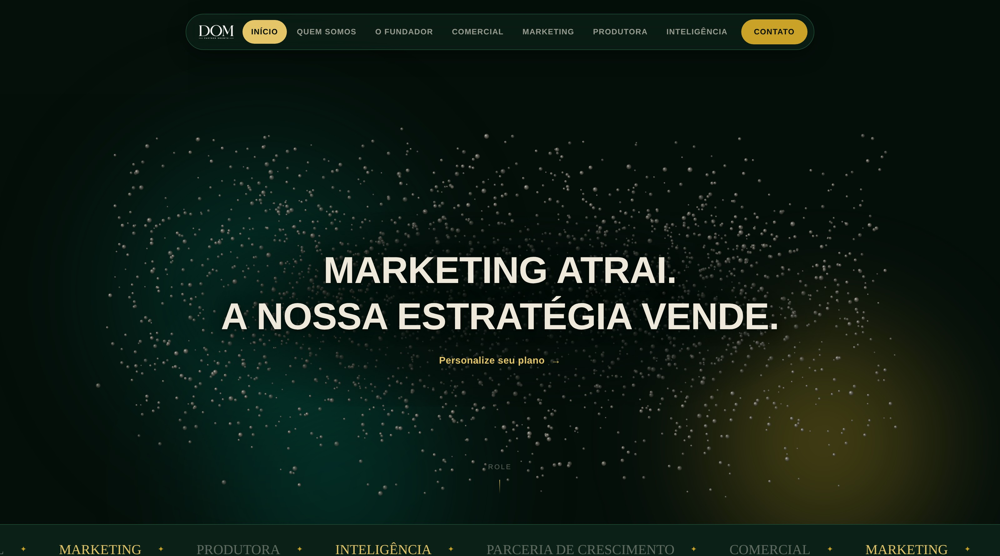
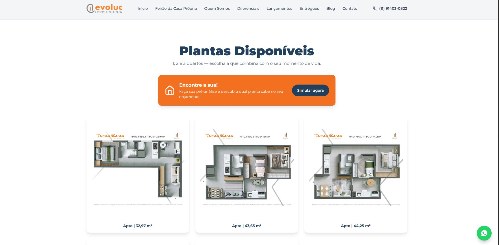
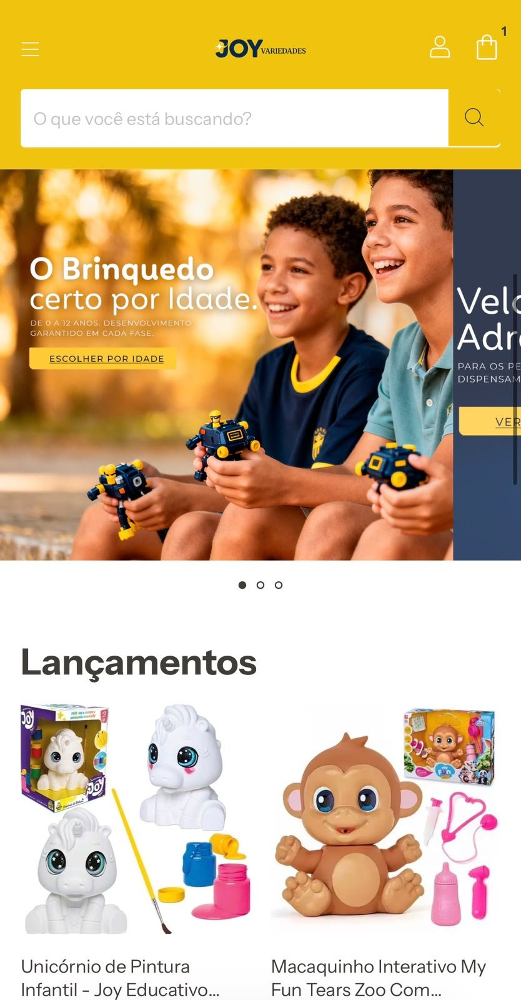
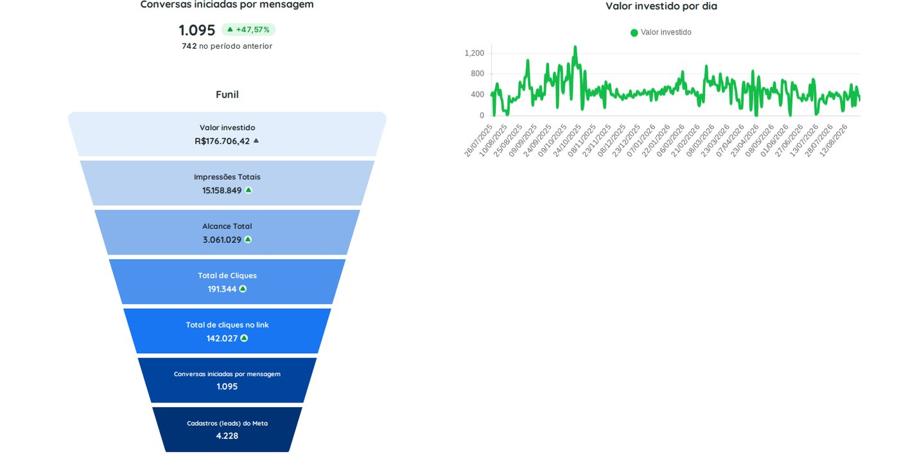
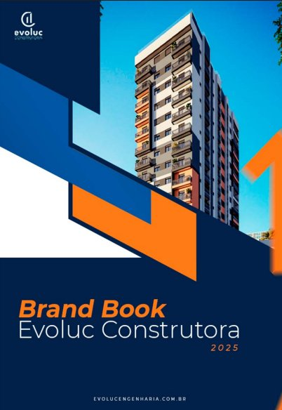

Marketing
Tráfego, conteúdo e branding puxando na mesma direção: a meta do seu negócio.
- 198,2xRetorno sobre mídia em conta ativa de cliente Dom
- +956%Alcance de marca em 13 meses
Anúncio rodando não é sinônimo de venda acontecendo.
Muita empresa investe em mídia, atrai curioso e continua sem previsibilidade de faturamento. O problema raramente é falta de verba: é falta de estratégia por trás do investimento.
Presença digital fraca
Comunicação sem clareza não constrói autoridade, e sem autoridade o anúncio custa mais caro pra converter menos.
Curioso não é cliente
Página que não converte atrai clique barato e contato ruim: o esforço de marketing não vira oportunidade real de negócio.
Decisão no achismo
Sem um painel que mostra de onde vem cada venda, ninguém sabe qual criativo, canal ou público está de fato trazendo retorno.
Um plano pra cada momento do negócio.
Gestão contínua de tráfego, conteúdo e branding. A profundidade muda conforme o plano, mas a régua de qualidade é sempre a mesma.
Tração
Pra quem hoje depende de indicação e precisa de um fluxo previsível de clientes novos. Constrói a fundação digital: tráfego, conteúdo e relatório caminhando juntos, mês a mês.
- Setup e planejamento estratégico inicial
- Gestão de tráfego pago (Google e Meta)
- 12 vídeos por mês, produzidos pela Papin REC (3 por semana)
- 8 carrosséis por mês (2 por semana), 20 publicações no total
- 25 peças por mês para Stories e WhatsApp
- Relatório mensal e reunião de alinhamento
Performance
Pra quem já investe em marketing e quer saber, com dado, quanto do resultado veio dele. Soma ao Tração o branding e o CRM com IA, pra marca e o follow-up crescerem junto com a operação.
- Tudo do Tração, com 12 carrosséis por mês (24 publicações no total)
- Projeto de branding e posicionamento de marca
- Implementação de CRM e automação com IA, pela Yzza
Domínio
Pra quem já está no topo e precisa de um olhar de fora sobre o mercado. É o braço direito estratégico da operação: o marketing completo com a visão do CEO da Dom.
- Tudo do Performance
- Consultoria estratégica de negócios direto com o CEO
- Análise competitiva e de mercado
- 1 landing page por mês
Valores e condições de cada plano vão na proposta.
Quando o que falta é uma entrega específica.

Site Institucional
Site que apresenta a empresa com credibilidade: estrutura, copy e design pensados pra conversão.

Landing Page
Página focada em um único objetivo: converter visitante em contato ou venda.

Loja Online
Loja virtual estruturada de ponta a ponta, com integração de marketplace quando faz sentido.
Ver mais →
Gestão de Anúncios
Gestão de tráfego pago isolada, pra quem já tem conteúdo e marca e precisa de resultado em mídia paga.
Ver mais →
Branding
A Bíblia da sua marca: cases reais de posicionamento pra marcas pessoais e corporativas.
Ver mais →Números que sustentam a estratégia.
R$19,43 milhões faturados no período, com 94% dos contatos que viraram cliente vindos do Facebook.
Investimento de 12 meses que voltou mais de 20 vezes, com estratégia por trás de cada campanha.